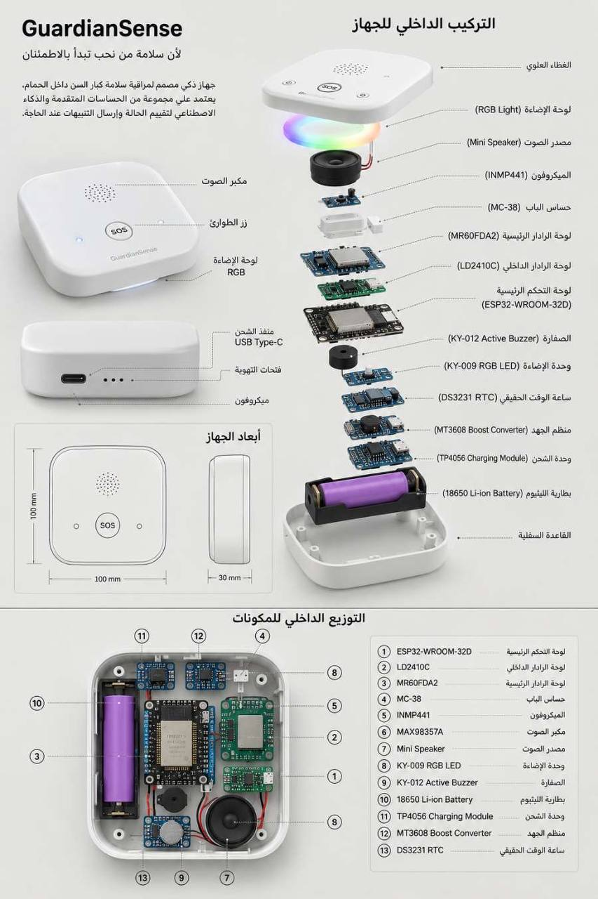

WHO — Falls
يوضح العبء العالمي للسقوط وأن الأكبر سنًا يتحملون أكبر عدد من السقوطات القاتلة، ما يدعم أهمية الاكتشاف والاستجابة المبكرة.
نظام ذكي متكامل صُمم لمساعدة كبار السن داخل المنزل، ويعتمد على دمج المستشعرات والذكاء الاصطناعي والتعلم الشخصي للروتين لتقييم الحاجة الفعلية للمساعدة، مع الحفاظ الكامل على الخصوصية ودون استخدام أي كاميرات.
نموذج بحثي أولي قيد التطوير والاختبار، وليس جهازًا طبيًا معتمدًا أو بديلًا عن خدمات الطوارئ والرعاية الطبية.

كل عام يتعرض ملايين كبار السن لحوادث سقوط داخل المنازل، ويُعد الحمام من أكثر الأماكن خطورة بسبب الأرضيات الزلقة والمساحات الضيقة.
كما أن كثيرًا من الأنظمة الحالية تعتمد على اكتشاف السقوط فقط، مما قد يؤدي إلى إنذارات كاذبة أو تجاهل حالات تحتاج فعلًا إلى المساعدة. تستند هذه المشكلة إلى تقارير صحية ودراسات منشورة حول إصابات السقوط لدى كبار السن.
بدلًا من اتخاذ القرار بناءً على حدث واحد فقط، يقوم النظام بجمع وتحليل عدة مؤشرات في الوقت نفسه:
يقيّم الحالة ويحدد ما إذا كانت: آمنة، تحتاج متابعة، أو تستدعي طلب المساعدة.
تم تصميم جهاز GuardianSense ليكون وحدة ذكية صغيرة الحجم تُثبت داخل الحمام لمراقبة السلامة دون استخدام أي كاميرات، مع الحفاظ على الخصوصية الكاملة وتحليل البيئة المحيطة.
مادة مقاومة للرطوبة بلون أبيض مطفي، تسمح بمرور الصوت والإشارات.
أخضر=يعمل، أصفر=انتباه، أحمر=طوارئ، أزرق=تحديث أو اتصال.
ميكروفون رقمي لاستقبال الاستجابة وكلمة المساعدة. لا يحفظ التسجيلات.
مكبر صوت مصغر لسؤال المستخدم، إطلاق التنبيهات، والتذكير بالأدوية.
العقل الإلكتروني المسؤول عن قراءة الحساسات، تشغيل خوارزميات القرار، والاتصال بالشبكة والتطبيق.
رادار دقيق لاكتشاف وجود الإنسان، الحركة، ومعرفة بقائه داخل الحمام.
رادار مخصص لاكتشاف السقوط وتحليل وضعية الجسم بدون كاميرا.
لرصد وقت دخول وخروج الحمام بدقة وحساب مدة البقاء.
لإصدار صفارة إنذار محلية داخل المنزل عند الحالات الحرجة.
بطارية داخلية قابلة لإعادة الشحن لضمان التشغيل أثناء انقطاع الكهرباء.
لإدارة شحن البطارية بأمان وحمايتها من التلف.
لرفع جهد البطارية وتزويد المكونات بالطاقة اللازمة.
لحفظ الوقت بدقة، تسجيل الأحداث، ومقارنة الروتين اليومي.
| الأبعاد والوزن | 11 × 11 × 3 سم | 250–350 جم |
|---|---|
| اللون والتثبيت | أبيض مطفي (Matte White) | يُثبت على جدار الحمام |
| الاتصال والطاقة | Wi-Fi + Bluetooth | بطارية 18650 مع دعم انقطاع الكهرباء |
| الخصائص الإضافية | مقاومة الرطوبة • بدون كاميرا • مكبر صوت وميكروفون للتفاعل • تحديثات OTA |
الاختيارات الحالية خاصة بالنموذج الأولي، وقد تتغير بعد اختبارات الطاقة، الرطوبة، التداخل، والتكلفة.
| المكوّن | الوظيفة | سبب الاختيار | ملاحظة هندسية |
|---|---|---|---|
| Front Cover | حماية الإلكترونيات وتمرير الصوت والرادار. | تصميم غير لافت ومناسب لبيئة منزلية حساسة. | يلزم اختيار خامة لا تعيق موجات الرادار واختبار مقاومة الرطوبة. |
| KY-009 RGB LED | إظهار حالة التشغيل والتنبيه والاتصال. | واجهة بصرية بسيطة ومنخفضة التكلفة في النموذج الأولي. | قد يُستبدل بحل LED مدمج أقل استهلاكًا في النسخة النهائية. |
| INMP441 | التقاط استجابة قصيرة أو كلمة استغاثة عبر I²S. | إشارة رقمية تقلل ضوضاء التحويل مقارنة بميكروفونات تناظرية بسيطة. | المعالجة محلية، ولا يُفترض حفظ التسجيلات الصوتية. |
| Speaker + MAX98357A | طرح سؤال التحقق وتشغيل التنبيهات. | مضخم I²S صغير يسهّل الربط المباشر مع ESP32. | يجب اختبار وضوح الصوت مع بخار الماء وضجيج المروحة. |
| ESP32-WROOM-32D | قراءة الحساسات، تشغيل منطق القرار، والاتصال. | يدعم Wi‑Fi وBluetooth وواجهات UART/I²C/I²S مع مجتمع تطوير واسع. | الموديول مصنف NRND من الشركة؛ يوصى بتقييم ESP32-WROOM-32E أو جيل أحدث للإنتاج. |
| LD2410C | اكتشاف الوجود والحركة الدقيقة والثبات. | استشعار دون كاميرا، ومفيد عند انخفاض الإضاءة أو سكون المستخدم. | يحتاج معايرة للمسافة والحساسية حسب مساحة الحمام. |
| MR60FDA2 | تقدير حدوث سقوط ووضعية الجسم بالرادار. | مصمم لتطبيقات اكتشاف السقوط دون ارتداء جهاز أو تصوير. | لا بد من اختباره ميدانيًا مع أوضاع سقوط وأنشطة يومية متنوعة. |
| MC-38 | رصد فتح وإغلاق الباب وربط الحدث بالدخول والخروج. | بسيط وموثوق ومنخفض الاستهلاك. | لا يثبت هوية الداخل؛ لذلك يعامل كدليل سياقي فقط. |
| KY-012 Buzzer | تنبيه محلي مستقل عن الهاتف. | يوفر قناة إنذار احتياطية مباشرة. | يجب ألا تكون شدة الصوت مزعجة في الحالات غير الحرجة. |
| 18650 Li-ion | تشغيل احتياطي عند انقطاع الكهرباء. | كثافة طاقة جيدة وتوفر واسع للنماذج الأولية. | يلزم خلية أصلية، حماية حرارية وكهربائية، وتصميم آمن للرطوبة. |
| TP4056 | شحن خلية ليثيوم واحدة وإدارة الحماية في النسخ المزودة بالحماية. | حل شائع وسهل للتجارب. | يجب التحقق من الحرارة والتيار، وقد يلزم حل إدارة طاقة أكثر تكاملًا للإنتاج. |
| MT3608 | رفع الجهد عند الحاجة. | مرن ومنخفض التكلفة للنموذج الأولي. | تُراجع الكفاءة والضوضاء الكهرومغناطيسية قبل تثبيت التصميم. |
| DS3231 | حفظ الوقت عند انقطاع الشبكة والطاقة الرئيسية. | دقة زمنية جيدة وبطارية احتياطية، ما يدعم مقارنة الروتين. | يمكن الاستغناء عنه إذا أثبتت اختبارات مزامنة الوقت والنسخ الاحتياطي عدم الحاجة. |
مرجع هندسي: وثائق Espressif الرسمية للمتحكم، وSeeed Studio لرادار السقوط، وبيانات TDK للميكروفون. جميع قرارات الاختيار قابلة للمراجعة بعد الاختبار.
يمكن لأفراد العائلة متابعة الحالة الصحية، والاطلاع على التنبيهات الفورية، ومراقبة حالة الجهاز والبطارية من أي مكان عبر تطبيق GuardianSense الذكي.
يعتمد النظام على دمج متقدم للمستشعرات والرادارات لتقييم الحالة واتخاذ القرار بطريقة ذكية دون المساومة على الخصوصية.
لأن الخصوصية أهم.
GuardianSense يعتمد على الرادار، الحركة، الروتين، والصوت... وليس على تصوير المستخدم داخل منزله.
إطار ذكي قابل للتفسير لتقييم الحاجة الفعلية للمساعدة لدى كبار السن داخل الحمام باستخدام دمج الأدلة متعددة المستشعرات.
الأنظمة التقليدية:
"هل سقط الشخص؟"
GuardianSense:
"هل يحتاج هذا الشخص إلى المساعدة الآن؟"
جمع مؤشرات الحركة، السقوط، الوقت، والروتين في نفس اللحظة.
فحص كل مؤشر على حدة (حركة، استجابة، مدة البقاء).
مقارنة السلوك الحالي بتاريخ المستخدم وتحديد ما إذا كان طبيعيًا.
جمع كافة المخرجات للحصول على صورة دقيقة وشاملة للحالة.
تحديد الحالة بين (آمن 🟢، يحتاج متابعة 🟡، يحتاج مساعدة 🔴).
سؤال المستخدم "هل أنت بخير؟" والتحقق من وجود استجابة.
التأكد من أن المؤشرات ليست ناتجة عن خطأ مؤقت.
إرسال إشعار فورى لأفراد العائلة مع تفاصيل الحالة وأسباب التنبيه.
كل تنبيه يصدره النظام يأتي مع توضيح للأسباب لتعزيز الثقة:
⚠️ تم رفع مستوى التنبيه بسبب:
• زيادة مدة البقاء عن المعتاد مقارنة بالروتين.
• انقطاع الحركة المستمرة داخل المكان.
• عدم الاستجابة للنداء الصوتي.
ملاحظة: يعتمد GuardianSense على إطار لاتخاذ القرار يجري تطويره واختباره ضمن هذا المشروع البحثي. يعرض الموقع المبادئ العامة لعمل النظام، بينما تبقى التفاصيل الفنية الدقيقة والخوارزميات الداخلية غير منشورة حفاظًا على الملكية الفكرية ودعمًا لجهود حماية الابتكار مستقبلًا.
يختبر GuardianSense ما إذا كان دمج أدلة متعددة وغير تصويرية، مع مقارنة السلوك بالروتين الشخصي والتحقق الصوتي، يمكن أن يحسن قرار طلب المساعدة داخل الحمام مقارنة بالاعتماد على إشارة سقوط منفردة.
إلى أي مدى يمكن لنظام منزلي غير قابل للارتداء، ودون كاميرا، أن يميز بين الحالة الطبيعية والحالة التي تحتاج إلى مساعدة عبر دمج: سقوط محتمل، حركة أو سكون، مدة البقاء، الاستجابة الصوتية، والانحراف عن الروتين الشخصي؟
دمج عدة مؤشرات مستقلة مع إعادة التحقق قبل إرسال الإنذار سيخفض الإنذارات الكاذبة ويحسن اكتشاف الحالات الحرجة مقارنة بقاعدة تعتمد على حدث سقوط واحد، مع المحافظة على الخصوصية وعدم إلزام المستخدم بارتداء جهاز.
مقارنة GuardianSense بخط أساس يعتمد على إشارة سقوط فقط.
تسجيل أحداث الحساسات ونتيجة السيناريو دون صور أو فيديو.
وسم كل تجربة يدويًا: سقوط، نشاط طبيعي، أو حالة تحتاج مساعدة.
الحساسية، النوعية، Precision، F1، معدل الإنذار الكاذب وزمن التنبيه.
صياغة سؤال البحث، حدود الاستخدام، ومخاطر الحمام.
مراجعة الرادار، الأجهزة القابلة للارتداء، قبول المستخدم والبراءات.
اختيار الحساسات، بروتوكولات الاتصال، وسياسة الخصوصية.
تجميع العتاد، برمجة ESP32، وربط التطبيق.
تنفيذ السيناريوهات المتكررة وتوثيق النتائج.
حساب المقاييس، تحليل الأخطاء، وضبط النموذج.
اختبار محدود بموافقات واضحة وإدارة مخاطر.
توثيق التصميم، مراجعة الملكية الفكرية، وخطة الاعتماد.
المصادر التالية دعمت اختيار الاستشعار غير التصويري، دمج الأدلة، وضرورة تقييم الإنذارات الكاذبة والقبول لدى كبار السن. الاعتماد هنا معرفي ولا يعني نسخ أي مطالبة براءة.
يوضح العبء العالمي للسقوط وأن الأكبر سنًا يتحملون أكبر عدد من السقوطات القاتلة، ما يدعم أهمية الاكتشاف والاستجابة المبكرة.
مراجعة واسعة لتقنيات الرادار وميزات Micro-Doppler وRange-Doppler والتحديات المتعلقة بالتعميم وتعريف السقوط.
دراسة ميدانية على جهاز قابل للارتداء أبرزت الفجوة بين الاختبار المخبري والاستخدام الواقعي، وأهمية الالتزام بارتداء الجهاز.
بحث في الاستشعار المنزلي غير المزعج لاكتشاف السقوط ومخاطره، ويدعم نهج الحساسات المحيطية المستمرة.
نظام بحثي لتتبع أشخاص واكتشاف السقوط بالرادار المليمترّي، يوضح إمكان التقنية مع ضرورة عدم نقل أرقامه إلى مشروع مختلف.
يبين أن التبني يتأثر بالسلامة، سهولة الاستخدام، التكلفة، الخصوصية والثقة؛ لذلك أُدرجت قابلية التفسير والخصوصية في التصميم.
| المرجع | الفكرة العامة | علاقتها بالمراجعة |
|---|---|---|
| US11741813B2 | تصنيف السقوط من سحابة نقاط رادارية مع معالجة متكيفة حسب منطقة الرصد. | Prior art للاستشعار الراداري غير التلامسي وتقليل التقارير الخاطئة. |
| US11875659B2 / PCT/US2019/065958 | مراقبة سقوط تحفظ الخصوصية باستخدام رادار في جهاز منزلي مع إخراج صوتي. | يوضح تقاطع الرادار، الخصوصية، والتفاعل الصوتي. |
| US7612681B2 | تقدير خطر السقوط من قياسات حساسات، تتضمن في بعض التطبيقات حساسات رادارية. | يساعد على تمييز التنبؤ بالخطر عن اكتشاف حدث السقوط. |
| CN118177787B | إنذار راداري يستفيد من بيانات تاريخية لشخص محدد لتحقيق تخصيص أكبر. | مرتبط بمفهوم الروتين الشخصي؛ يستلزم تحليل مطالبات قانوني متخصص قبل الإيداع. |
المقارنة وظيفية عالية المستوى بحسب الصفحات الرسمية المتاحة بتاريخ 30 يوليو 2026، وليست حكمًا سريريًا أو تجاريًا نهائيًا.
| المعيار | Apple Watch | Life Alert | Vayyar Care | GuardianSense — Prototype |
|---|---|---|---|---|
| طريقة الاستخدام | ساعة تُلبس على المعصم. | زر/قلادة/سوار مع مركز استجابة. | حساس RF ثابت دون ارتداء. | وحدة ثابتة داخل الحمام دون ارتداء. |
| البدء بطلب المساعدة | رصد سقوط قوي، تنبيه، ثم اتصال تلقائي عند عدم الحركة وفق الشروط. | الصفحات الرسمية تركز على ضغط زر المساعدة والتحدث مع المرسل. | اكتشاف سقوط تلقائي بالرادار وإرسال تنبيه. | دمج سقوط، حركة، مدة، روتين، ثم تحقق صوتي قبل التصعيد. |
| الكاميرا | لا تعتمد ميزة السقوط على كاميرا. | لا يعتمد زر الطوارئ على كاميرا. | لا يستخدم كاميرا؛ يعتمد RF. | لا توجد كاميرا. |
| شرط الارتداء/التذكر | يجب ارتداء الساعة وشحنها. | يجب ارتداء/حمل زر المساعدة والضغط عليه في النماذج اليدوية. | لا يتطلب ارتداء جهاز. | لا يتطلب ارتداء جهاز داخل نطاق الغرفة. |
| التخصيص بالروتين | ليست محور شرح ميزة Fall Detection الرسمية. | ليست محور النظام اليدوي المعلن. | تذكر الشركة أنماط حركة غير اعتيادية في عروض الرعاية. | جزء أساسي مقترح من إطار القرار. |
| قابلية تفسير التنبيه | يظهر أن سقوطًا قويًا اكتُشف. | تقييم بشري بعد التواصل. | تنبيهات سقوط وحركة بحسب المنصة. | إظهار أسباب: سقوط، سكون، تأخر، عدم استجابة، انحراف روتين. |
| وضع المشروع/الخدمة | منتج استهلاكي متاح. | خدمة إنذار ومركز استجابة. | حل رعاية راداري تجاري. | نموذج بحثي غير معتمد طبيًا ولم تثبت دقته بعد. |
الميزة البحثية المستهدفة لـ GuardianSense ليست مجرد “اكتشاف السقوط”، بل تقييم الحاجة الفعلية للمساعدة عبر سياق متعدد. يجب إثبات هذه الميزة تجريبيًا قبل استخدامها كادعاء أداء.
معالجة الحدث الأساسي محليًا أولًا، ثم تُرسل نتيجة مختصرة وآمنة إلى التطبيق عند توفر الشبكة.
نقل مشفر لملخص الحدث وحالة الجهاز إلى API/Backend.
إشعار، أسباب القرار، حالة البطارية، وسجل الأحداث المسموح.
استلام تنبيه واتخاذ إجراء وفق خطة الطوارئ.
التقييم المحلي يستمر حتى عند ضعف الإنترنت؛ التنبيه البعيد ينتظر عودة القناة أو يستخدم قناة احتياطية مستقبلًا.
إرسال أقل قدر ممكن: نوع الحدث، الوقت، درجة الحالة، الأسباب، وحالة الجهاز.
التنبيه المحلي والبطارية الاحتياطية لا يعتمدان كليًا على التطبيق أو الشبكة.
المنطق التالي يوضح الهيكل، بينما تبقى الأوزان والحدود الدقيقة متغيرات بحثية تخضع للاختبار.
فتح الباب أو اكتشاف وجود يبدأ سياقًا زمنيًا جديدًا.
التحقق من الاتصال، حداثة القراءة، والبطارية قبل الوثوق بالبيانات.
Fall signal، الحركة، مدة السكون، مدة الجلسة، نمط الباب، والاستجابة.
مقارنة الزمن والحركة بسلوك المستخدم التاريخي مع السماح للتغير التدريجي.
رفع الثقة عندما تتفق مؤشرات مستقلة، وخفضها عندما تتعارض.
عند الحالة المتوسطة/العالية: “هل أنت بخير؟” ثم تحليل وجود رد مسموح، لا حفظ الحديث.
مراقبة قصيرة لاكتشاف عودة الحركة أو فتح الباب أو رد واضح.
تصنيف آمن/متابعة/مساعدة وإرفاق أسباب قابلة للفهم.
يجب تكرار كل حالة بأشخاص، زوايا، ملابس، سرعات، وأوضاع تركيب مختلفة، مع تسجيل النتيجة الحقيقية مسبقًا.
| السيناريو | الإشارات المتوقعة | السلوك المطلوب | مؤشر النجاح |
|---|---|---|---|
| سقوط قوي وعدم حركة | Fall مرتفع + سكون + لا رد. | تحقق صوتي قصير ثم تنبيه أحمر محلي وبعيد. | حساسية وزمن تنبيه مناسب دون تأخير خطر. |
| انزلاق مع استعادة الوقوف | إشارة سقوط لحظية ثم حركة ورد. | إلغاء التصعيد أو تحويله لمتابعة موثقة. | عدم إرسال طوارئ كاذبة مع حفظ الحدث. |
| الجلوس أو الانحناء بسرعة | تغير ارتفاع دون نمط سقوط كامل. | تصنيف آمن أو متابعة قصيرة. | Specificity جيدة ضد الأنشطة اليومية. |
| تأخر أطول من الروتين | مدة شاذة مع حركة ضعيفة أو متقطعة. | سؤال المستخدم، ثم متابعة أو تنبيه بحسب الرد. | تمييز التأخر الطبيعي من الحالة الصحية. |
| مرض/دوخة دون سقوط واضح | سكون غير معتاد + مدة طويلة + كلمة مساعدة أو لا رد. | رفع مستوى الخطر حتى دون إشارة سقوط قوية. | اكتشاف “الحاجة للمساعدة” لا السقوط فقط. |
| ضيف ذو روتين مختلف | روتين غير معروف أو مخالف للمستخدم الأساسي. | تعطيل/تقليل وزن الروتين مؤقتًا وعدم تعلم الضيف تلقائيًا. | منع إنذارات بسبب اختلاف العادات. |
| شخصان في المكان | أهداف متعددة أو قراءات متداخلة. | إعلان “حالة غير مؤكدة/متعدد” وعدم الادعاء بتحديد هوية. | سلوك محافظ وتوثيق محدودية النظام. |
| الباب مفتوح دون دخول | MC-38 يتغير دون وجود راداري. | لا تبدأ جلسة كاملة اعتمادًا على الباب وحده. | عدم احتساب مدة زائفة. |
| بخار/ماء/مروحة | ضوضاء بيئية أو صوتية. | استمرار الرصد، وتسجيل انخفاض جودة الصوت إن حدث. | استقرار الرادار وعدم تضخم الإنذارات. |
| انقطاع الإنترنت | الحساسات سليمة، قناة التطبيق غير متاحة. | قرار وتنبيه محلي، تخزين حدث مؤقت وإرساله عند العودة. | عدم توقف الحماية المحلية. |
| انقطاع الكهرباء | الانتقال إلى البطارية. | استمرار أساسي، إشعار بطارية، ثم إغلاق آمن عند حد حرج. | زمن تشغيل احتياطي موثق واختبار حراري. |
| فشل حساس واحد | قراءة قديمة/غير منطقية أو انقطاع UART. | خفض الثقة، إظهار عطل، وعدم تقديم “آمن” بثقة زائفة. | Fault detection وFail-safe واضحان. |
خريطة مرحلية؛ الانتقال بين المراحل يعتمد على اجتياز معايير الاختبار والسلامة.
تقييم ESP32-WROOM-32E أو منصة أحدث بدل 32D المصنف NRND.
تحديث الروتين تدريجيًا مع منع تعلم الحالات الشاذة أو الضيوف تلقائيًا.
دراسة LTE-M/NB-IoT أو بوابة منزلية عند غياب Wi‑Fi، وفق السوق واللوائح.
روابط الوصول أدناه للاطلاع والتحقق. تاريخ المراجعة: 30 يوليو 2026.
لا. هو نموذج بحثي أولي قيد التطوير والاختبار، ولا يجوز اعتباره بديلًا لخدمات الطوارئ أو التقييم الطبي.
لا توجد كاميرا في التصميم. يعتمد النظام على الرادار وحساس الباب والوقت والتحقق الصوتي المحدود.
المبدأ التصميمي هو معالجة الاستجابة محليًا وعدم حفظ التسجيلات. يجب توثيق ذلك تقنيًا في الكود وسياسة الخصوصية واختباره أمنيًا.
لا يمكن ضمان اكتشاف جميع الحالات. الأداء يعتمد على التركيب والبيئة والخوارزمية، ويجب قياسه باختبارات معلنة.
التصميم يستهدف استمرار القرار والتنبيه المحلي. الإشعار البعيد قد يتأخر حتى عودة الاتصال ما لم تُضف قناة احتياطية.
يجب توفير وضع ضيف أو تعطيل وزن الروتين مؤقتًا، ومنع النظام من دمج سلوك الضيف في ملف المستخدم الأساسي تلقائيًا.
لا يفترض النظام تحديد هوية الشخص من الرادار. إذا كان هناك أكثر من شخص أو هوية غير مؤكدة، يجب إظهار محدودية القرار.
لأن الحاجة للمساعدة قد تحدث دون سقوط واضح، كما أن بعض الحركات اليومية قد تشبه السقوط. لذلك يدمج النظام عدة أدلة ويعيد التحقق.
مشروع GuardianSense، بما يشمل الاسم والعلامة والهوية البصرية، النصوص الأصلية، مخططات النظام، تصميمات الواجهات، التصاميم الصناعية، الرسومات، الشيفرات البرمجية، قواعد القرار، النماذج الأولية والمحتوى المنشور، هو ملك لـ GuardianSense ما لم يُذكر خلاف ذلك. لا يجوز النسخ أو إعادة النشر أو الاستخدام التجاري أو إنشاء أعمال مشتقة دون إذن كتابي مسبق.
المراجع والأسماء التجارية وبراءات الأطراف الأخرى تبقى ملكًا لأصحابها، ويُستخدم ذكرها لأغراض البحث والمقارنة فقط. هذا النص لا يغني عن تسجيل العلامة أو حقوق المؤلف أو طلب البراءة وفق النظام المعمول به.
سجل حالة شفاف يفرق بين ما تم تصميمه وما تم التحقق منه فعليًا.
تعريف المشكلة وسؤال البحث والفرضية الأولية.
تصميم معماري أولي للحساسات وESP32 والتطبيق.
اختيار مكونات نموذج أولي ووصف وظائفها.
تصميم Decision Framework قابل للتفسير.
إعداد سيناريوهات اختبار ومقاييس تقييم.
مراجعة أولية للدراسات والأنظمة والبراءات.
تجميع النموذج العتادي الكامل والتحقق الكهربائي — قيد العمل.
اختبارات أداء موثقة ودراسة ميدانية — لم تكتمل بعد.
لدى مشروعك استفسار أو ترغب في معرفة المزيد عن نظام GuardianSense؟ يسعدنا تواصلك معنا.
نعمل باستمرار على تطوير حلول ذكية لسلامة كبار السن. لا تتردد في مراسلتنا لأي مقترح أو استفسار أكاديمي أو تقني.
تواصل معنا عبر واتساب